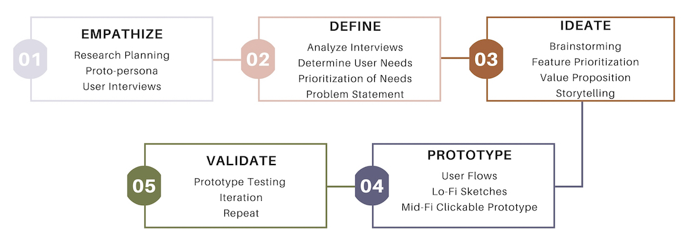
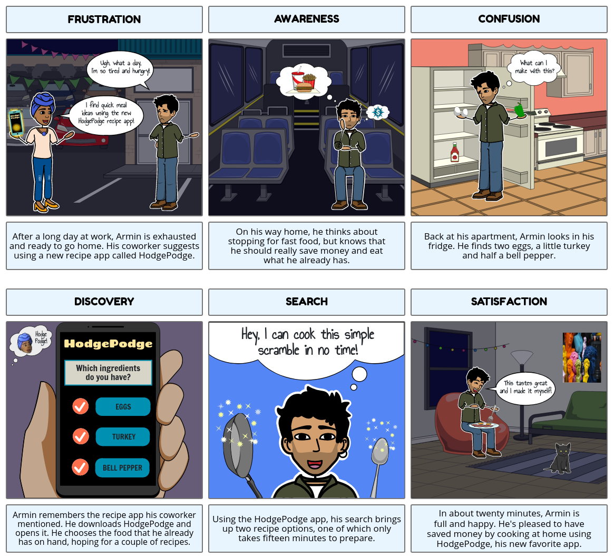

Hodge Podge: A Recipe App
The recipe app that allows you to create quick, nutritious meals using items you already have on-hand!
Overview
Objective
Most people often have food in their kitchen that they would love to cook, but they just aren’t sure what to make with it. They don’t necessarily want to go grocery shopping, and they would rather not waste money on dining out or ordering in. The issue is that they lack the inspiration or the knowledge to combine the ingredients that they have to make a quality meal. HodgePodge is designed to help its users by connecting them with recipes that are based on ingredients that they have on hand that cater to their time and skill needs.
Problem Statement
We have observed that users have food that they are unsure of how to prepare, resulting in wasted food and money. Their internet searches return too many options, when they only have time and patience for one or two. As a result, people often feel overwhelmed when deciding what to cook with the food and time they have available. How might we create a platform which helps users receive limited results so they are able to save time, food and money?
My Role
UX Researcher and Visual Designer
The Design Process

Protopersona
My research team and I created a preliminary persona based on our shared understanding of who would be most likely to use an app like ours... This persona was not based on concrete research but served as a guide for the formation of the research plan.

User Interviews
I conducted two initial user interviews as well as an online survey to gain insight into what a user may want or need in a recipe app as well as what their goals are when preparing a meal for themselves or others... This survey consisted of questions regarding the user's cooking skills, grocery shopping habits, and cooking strategy. Click here to view the survey.
Affinity Diagram
I compiled a list of insights with the other two members of my team. Those insights were organized into the categories shown above...These categories allowed us to visualize the common thoughts and feelings of our surveyed users.
Empathy Map
Based on the user insights, we were able to create an empathy map indicating our user’s thoughts, comments, feelings, and actions...This stage helped us decide on the behaviors and personalities of our ideal user demonstrated by our persona.
User Persona
After conducting extensive user research the team was able to refine our original persona. The final persona more accurately represented our ideal user. The biggest pain points of the user were food being wasted, not having enough time to cook, and not having the knowledge or skill to cook well.Brainstorming and Feature Prioritization
During this phase I discovered which features were most important to the user based on the interview and survey data extrapolation. We really wanted to be able to offer users an app that could do anything and everything they even hinted at needing. We quickly found ourselves going down the rabbit hole of scope creep and feature overload. After gaining instructor feedback, we realized we needed to really hone in our ideas and narrow it down to just a few key features. We further prioritized the features based on what could most feasibly implemented in the timeframe of the project.

I conducted 3 user tests on the low fidelity prototype. The first 2 tests revealed minor issues with the interface such as some of the touch-points being too small. Another issue that arose was that users had some difficulty navigating to the "Favorites" smoothly without coaching. After the second test, I iterated on some of the screens to improve the experience during the third test. I increased the touch-point sizes where it was needed, changed some of the copy, as well as added a favorites icon to 4 of the pages to make the task of navigating to that page more intuitive.
During the ideation phase my teammates also created their own wireframes to represent the user flow. However, after we conducted our individual user tests, we collectively decided to proceed with my design. You can check out my Lo-Fi Prototype here
Storytelling
Based on the data collected and our understanding of the features the user desired to have in the app, my team and I created the following user scenario:

Also, during this phase I started brainstorming a name for our app. I wanted the name to reflect the nature of the meals our user would try to prepare. Essentially, a name that would represent pulling together somewhat random items to make something awesome. Since “hodge-podge” literally means a jumbled up mixture, it was perfect!
Iterations


Mid-Fidelity Prototyping
With the team I created digital wireframes based on the sketches above using Figma. We started by mocking up the frames in simple grayscale just to get a general feel for how the app would look. I created a logo for the app using Adobe Illustrate. This logo went through several iterations (see iterations below), before we decided what would work best with our app based on readability standards and overall design appearance.